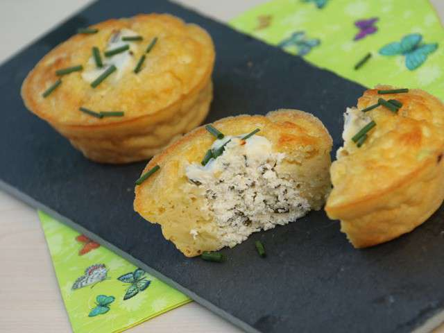

Cookpad - Que la cuisine rime avec plaisir! En cette période particulière de confinement, toute l’équipe de la DENM pense à vous et à vos proches. Pensez aux autres, restez chez vous et surtout prenez soin de vous.
Machines à Café Inissia | Nespresso Je peux stocker et organiser mes recettes, mes commentaires, créer des menus, etc. Aller sur mon carnet. Nouveautés. Anniversaire d'enfant : notre sélection pour une belle table de fête Notre sélection des meilleures cuisinières pour enfants. Suivez-nous. Suivez-nous sur les réseaux sociaux !
LES MEILLEURES RECETTES DE GATEAU Découvrez la Gamme de Machines à Café Inissia par Nespresso, la plus petite et colorée des Machines Nespresso avec toujours ce goût exceptionnel de café.
Recettes de cuisine | 750g De 4/6 à 36 mois, des gammes adaptées aux besoins spécifiques de bébé ! Des produits, conseils et des Recettes pour bébé !
Gateau : nos délicieuses recettes de gateau Bouillon Concentré Recettes. Trouvez votre idéal de saveur avec le bouillon concentré Campbell’s! Nos bouillons concentrés sont jusqu’à quatre fois plus concentrés que nos bouillons prêts à utiliser.
Recettes de cocktails et boissons Soif de recettes ? On se donne rendez-vous dans votre boîte mail ! Découvrir nos newsletters. Retrouvez Marmiton où que vous soyez en téléchargeant l'application. Concocté avec ♥ par Marmiton. Tous droits réservés Marmiton.org - 1999-2021.
Recettes : les meilleures recettes de cuisine - recette classique, originale, exotique ...
2021.04.13 13:09

xwRlOl6a2QgBwb_R7avOS 1618305254613 Jeu-Concours : paniers Quitoque et bons de réductions à gagner dès maintenant ! Connexion Inscription Découvrez des recettes personnalisées en créant votre profil Marmiton Recettes par catégories Idées recettes Aller plus loin Mes aides à la cuisine Communauté Abonnez-vous Recettes par catégories Apéritifs Entrées Plats Desserts Boissons Petit-déj/brunch Idées recettes Qu'est-ce qu'on mange ce soir ? Menu de la semaine Recettes de saison Recettes par thème Recettes par ingrédient Top des recettes Les grands classiques Nouveautés Proposer une recette Aller plus loin Mieux manger Mieux acheter Bon plans Mes aides à la cuisine Table de conversion Mon Frigo Techniques en vidéos Communauté Participer au forum Devenir testeur Abonnez-vous Marmiton magazine Newsletters Je recherche une recette Je recherche par ingrédient
Rechercher une recette
Une recette (je cherche une recette en fonction des ingrédients que j'aime ou que je n'aime pas) Dans mon frigo (je cherche une recette en fonction des ingrédients que j'ai dans mon frigo)
Les recettes les plus recherchées par les internautes par type de plat
Entrées Plats Desserts Amuses bouches Sauces Accompagnements Boissons Entrée